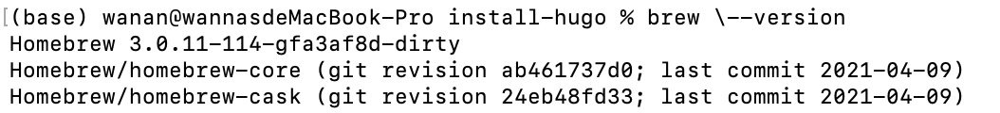
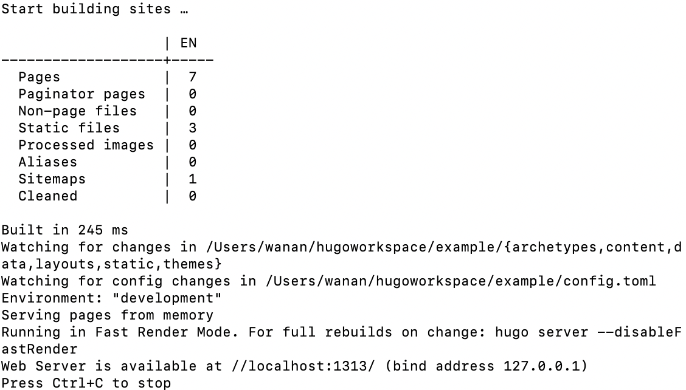
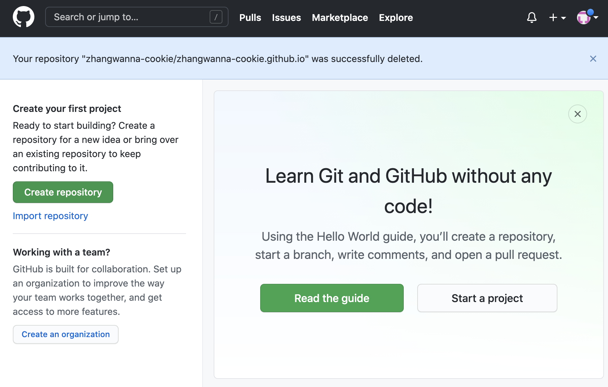
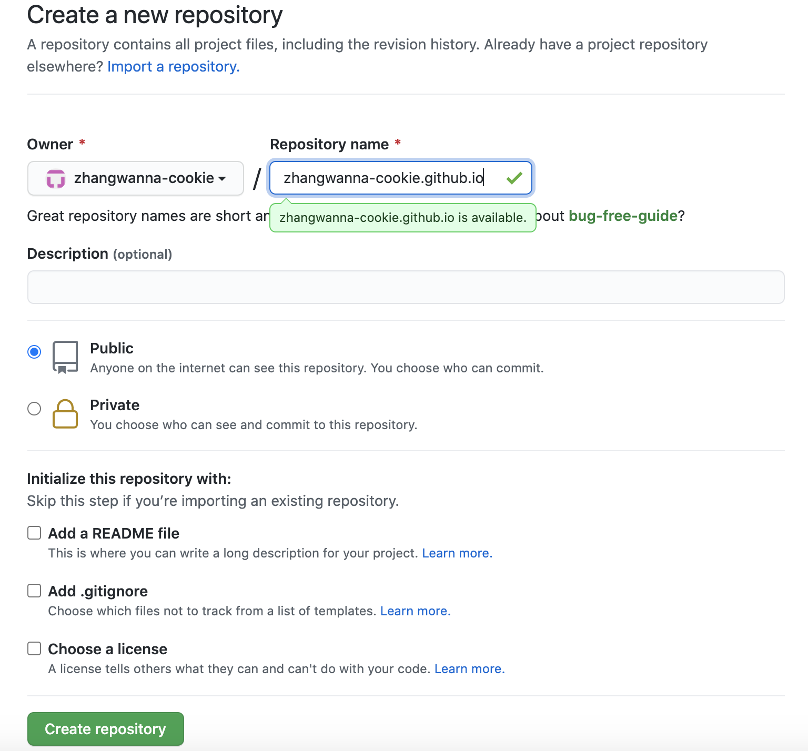
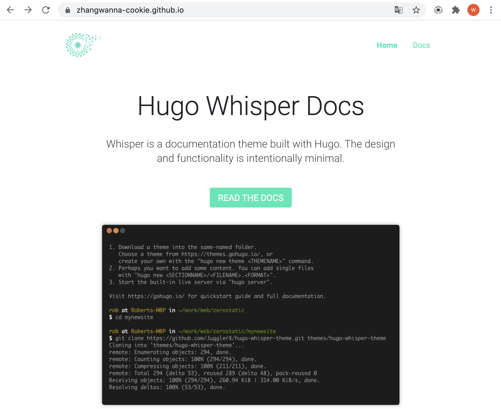

Build a Document Website
This document introduces a series of steps to build a document website for MacOS by using the open source project Hugo. By publishing the website code to GitHub, everyone could visit the website through .io domain, provided by GitHub page.
Step 1: Install Homebrew
Homebrew is a management tool kit for MacOS platform, with many practical functions, such as installing, uninstalling, updating, viewing, searching and etc.
Verify that you have installed Homebrew.
brew --version
If you have installed the tool kit, the terminal displays Homebrew version number.
|  |
|---|
Otherwise,execut the code below to install Homebrew.
/bin/bash -c "$(curl -fsSL https://raw.githubusercontent.com/Homebrew/install/HEAD/install.sh)"
If your installation failed with unstable network,you could change to the mirror source to install it. Copying the below code to execute following the steps.
/bin/zsh -c "$(curl -fsSL https://gitee.com/cunkai/HomebrewCN/raw/master/Homebrew.sh)"
To verify your new install again.
brew --version
Step 2: Install Hugo
Hugo is an open source project that can be used to build static websites quickly. Meanwhile, it also provides varieties of themes, which can be applied directly.
Installing Hugo.
brew install hugo
To verify whether your installation was successful. If you succeed, the terminal displays “Hugo version number”.
hugo version
Step 3: Create a New Site
You could create a new site when you completed the steps above. example is my website name, you could name your site as you like.
hugo new site example
The above will create a new Hugo site in a folder.
Step 4: Add a Theme
Enter the site folder you just created. Then you could clone the theme from GitHub and add it to your site’s themes directory. My site’s theme is hugo-whisper-theme, you could choose different theme in Hugo theme library. And this step would expend a few minutes.
cd example
git init
git clone https://github.com/jugglerx/hugo-whisper-theme.git themes/hugo-whisper-theme
Step 5: Modify Configuration File
Confirm you are still in the site directory. I’m currently in the example directory. Delete profile config.toml.
rm config.toml
In order to add example content,copy the entire contents of the themes/hugo-whisper-theme/exampleSite/ folder to the root folder of your site, ie example/
cp -a themes/hugo-whisper-theme/exampleSite/. .
By now the config.toml have been updated. Open the file and enter the edit mode(input “i”).
vi config.toml
Modify the baseURL, themesDir, and theme values of the config.toml.
baseURL = "/"
themesDir = "themes"
theme = "hugo-whisper-theme"
Step 6: Local Testing
In the Hugo site directory, start Hugo serve.
Hugo server -D
If the server starts successfully, the terminal will display like this.
|  |
|---|
Then you could copy localhost:1313 to the browser address bar to view.
Step 7: Create a New GitHub Repository
When you do this step, you have registered a git account and logged in.
|  |
|---|
Click the green button Create repository on the left side of the page. To fill in the configuration items according the below picture and click the green button Create repository on the bottom.
|  |
|---|
It is necessary to remind you, repository name must be composed of owner, .github and .io. (your repository name =your owner + .github.io )
Step 8: Deploy Code to GitHub
To build a public folder that can be published to the repository that you created just now.
hugo --theme=hugo-whisper-theme --baseUrl="https://zhangwanna-cookie.github.io/"
Then enter the public directory and deploy code to GitHub.
cd public
git init
git add .
git commit -m 'first commit'
git remote add origin https://github.com/zhangwanna-cookie/zhangwanna-cookie.github.io.git
git push -u origin master
Step 9: Check the Site
To enter https://zhangwanna-cookie.github.io/ to the browser address bar to view the site.
|  |
|---|